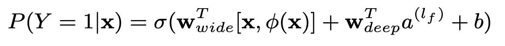

Recommender systems are everywhere, from suggesting the next best TV series you’ll binge on, to showing you the perfect T-shirt you never knew you wanted. One notable approach that broke new ground in this field is Wide & Deep Learning, introduced by Cheng et al. in their 2016 paper, Wide & Deep Learning for Recommender Systems. If you’ve ever wondered how modern apps seamlessly mix “rules of thumb” with “insights from big data,” this architecture might hold the key. Let’s dive in!
1. Why Wide & Deep?
One fundamental challenge in building recommendation models is striking the right balance between:
- Memorization: Leveraging known association or rules learned from historical data (e.g., “Users who clicked on sports shoes are also likely to buy socks”).
- Generalization: Capturing deeper patterns and extrapolating beyond the immediate training data (e.g, the model learning abstract features of products that might appeal to different segments of users).
Traditionally, linear models (like logistic regression or linear regression) do a great job at memorizing. They directly learn weights for feature value pairs and can easily capture cross features if hand engineered carefully. However, they don’t always generalize to new or unseen combinations of features. Neural networks, on the other hand, excel at discovering complex feature representations and generalizing beyond what’s explicitly observed. But they can sometimes struggle to pick up trivial but important rules if not fed right inputs.
Wide & Deep Learning merges these strengths by combining a linear “wide” model and a deep neural network into one unified architecture. This results in a system that can both memorize known feature interactions and discover new, abstract relationships in the data.
2. Architecture at a glance
The high level idea is quite intuitive:
-
Wide Component (a linear model):
- Takes cross features as inputs and feeds them into a simple, linear layer.
- Responsible for memorizing explicit feature interactions found in historical data.
-
Deep Component (a feed forward neural network):
- Learns dense, low dimensional embeddings for sparse features (such as user ids, product ids, or categories).
- Passes those embeddings through multiple hidden layers (fully connected layers with ReLU activations).
- Responsible for generalizing to new or less frequently seen feature combinations.
-
Joint Training:
- The outputs of both the Wide and Deep components are combined (summed) to produce the final prediction.
- The entire model is trained end to end using a single loss function (e.g., logistic loss for classification tasks).
For a logistic regression problem, the model’s prediction is:
This combination allows the model to latch onto known or easy to memorize associations while also uncovering new, non linear patterns in the data.
3. Key Contributions
Overall, there are a couple contributions from the paper:
-
Unified Approach:
The Wide & Deep model combines a linear model that memorizes direct interactions (like “gender=female” with “language=en”) with a deep neural network that learns hidden patterns from dense embeddings. This mix captures both obvious and subtle relationships. -
Joint Training:
Rather than training separate models and combining them later, both parts of the model are trained together. This joint approach makes the system more efficient and helps each part cover the other’s weaknesses. -
Handling Sparse Data:
The Wide part uses the FTRL algorithm with L1 regularization to keep the model lean by zeroing out unimportant weights. Meanwhile, the Deep part uses AdaGrad to effectively learn from high dimensional data. -
Smart Feature integration:
The model brings together raw and transformed features from basic numerical values to complex cross products, providing a well rounded view of user behavior for better recommendations.
4. Real World Applications
In the paper, they applied Wide & Deep to power the recommendation system for the Google Play app store.
-
Data & Training:
User behavior and app impression data generate training examples with binary labels. Categorical features are mapped to integer IDs and continuous features normalized. The model learns 32 dimensional embeddings, which are concatenated with dense features and passed through ReLU layers to a logistic output. A warm-start system reuses embeddings and weights for efficient retraining on billions of examples. -
Model Serving:
For each request, candidate apps are scored via a forward pass over the model. Multithreaded, parallel batch processing reduces latency to ~14 ms, even as the system scores millions of candidates per second. -
Impact:
In A/B tests, the Wide & Deep model improved app acquisition rates by +3.9% compared to a wide only baseline and +1% over a deep only model, demonstrating its effective blend of memorization and generalization in real world traffic.
----------
Wide & Deep Learning beautifully mirrors how we, as humans, process information. On one hand, we rely on our “memorized” knowledge—straightforward facts, associations, and past experiences—to guide familiar decisions. On the other hand, we use creativity and higher level thinking to handle new or less obvious challenges. By blending these two paradigms into a single framework, Wide & Deep Learning gives recommender systems the best of both worlds: the reliability of established truths and the flexibility to discover novel insights.